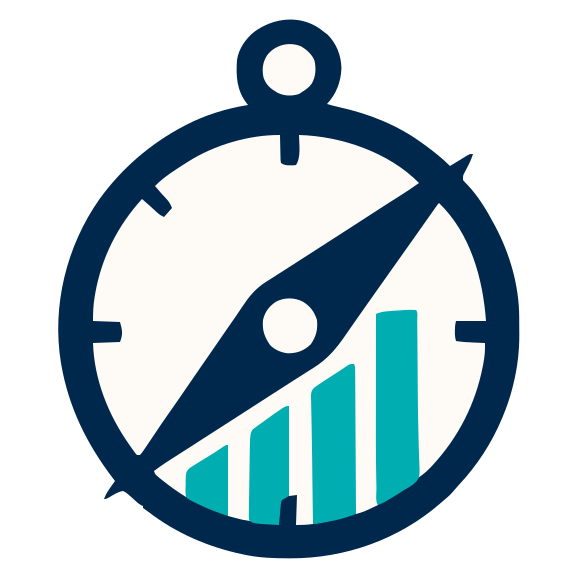
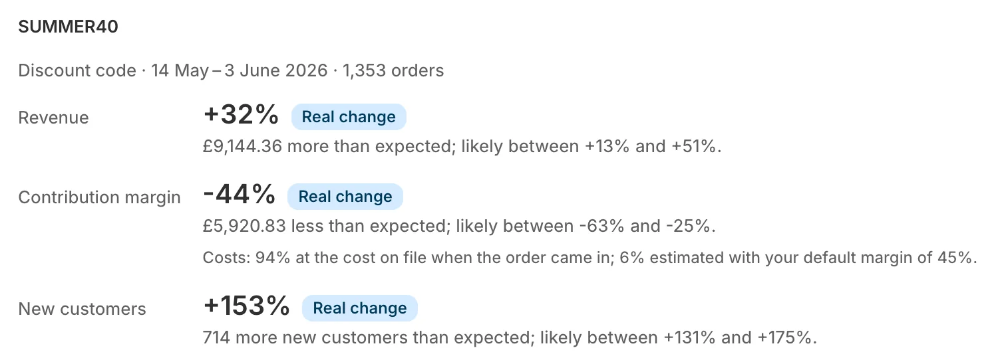
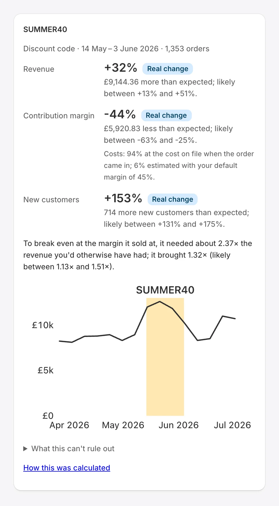
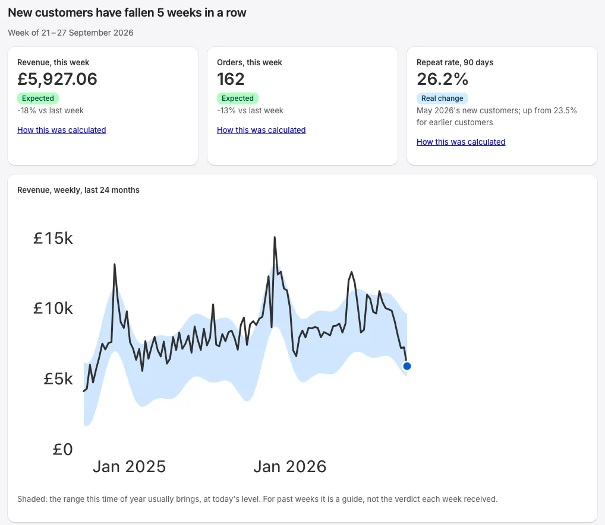
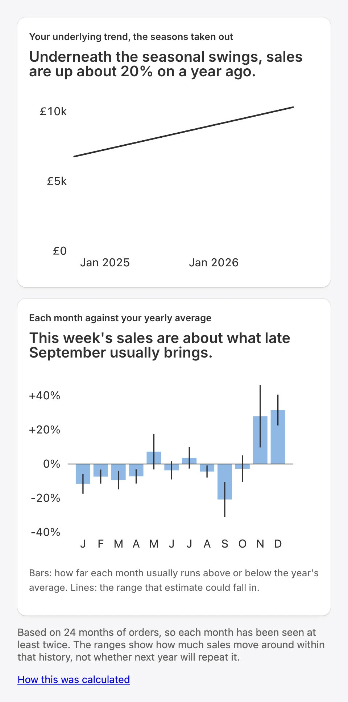

Stats Compass
Most ecommerce analytics tell you what happened.
Stats Compass tells you whether it means anything.
Every number carries a verdict: expected, real change, noise, or not enough data yet. So you know what changed, what your promotions actually earned, and where every figure came from.
Stats Compass Commerce is free during early access.

A number on its own can't tell you whether to act. Stats Compass judges each one against what your own history says is normal for this time of year, and says so in plain words.
Within the range this time of year usually brings. Nothing to chase.
Outside the usual range, and too large to be chance. Worth acting on.
It moved, but by no more than week-to-week swings already do.
Too little history to judge, and we tell you how much more it needs.
A weekly report with a verdict on every headline figure: revenue, orders, average order value, margin, new and returning customers. "Nothing unusual happened" is a complete report.
Each discount's lift in revenue and contribution margin, measured against the sales that were coming anyway, with a range and a verdict. A busy week isn't a profitable one.
Every number opens "How this was calculated": the definition, its version, and how many orders it was computed from.
Connect your Shopify store and Stats Compass reads your orders, products and customers. It never writes to your store. Your seasons, your promotions and your customers are judged against your own history, not an industry average.

Each promotion's lift in revenue, contribution margin and new customers, measured against the sales that were coming anyway, with the range each could fall in. The chart marks the promotion window against the weeks around it.

Each headline figure with its verdict, and this week against the range this time of year usually brings. When something is worth a look, it leads the report: here, new customers falling five weeks in a row while revenue stays within its usual range.

Your underlying trend with the seasons taken out, how each month usually runs against your yearly average, and a revenue forecast for the next 90 days, each with the range it could fall in. So a busy November reads as November, not as growth.
Free during early access. Email us and we'll get your store connected.
Ask Claude about your store's orders in conversation. Set it up once, in four steps.
Connect your store
In the Stats Compass app in your Shopify admin, click Connect an AI assistant, on the overview or in Settings. Sign in when asked, with Google or email.
Add Stats Compass to Claude
On claude.ai, add a custom connector with:
https://Sign in the same way
When Claude asks you to sign in, use the same sign-in as in step 1, for example the same Google account. A different sign-in is a different account, and won't see your store.
Ask about your store
Start with "Use stats compass to…", for example:
Using ChatGPT, VS Code or Cursor? Add Stats Compass with the install options below, then sign in the same way as in step 1.
Commerce is built on stats-compass-core, our open-source statistics library. The same engine plugs into your AI assistant through the Model Context Protocol: 50+ data tools to load, clean, chart and model any CSV, spreadsheet or Google Sheet, from Claude, ChatGPT, VS Code or Cursor.
CSV, Excel, JSON, Parquet
Charts, histograms, heatmaps
Filter, merge, pivot, aggregate
CSV, Excel, charts as images
Ask your AI assistant to analyse a spreadsheet and pick it from your Drive. No downloading, no re-uploading, no hunting for links. Results can be written straight back to a new sheet.
"Use stats compass to let me pick a churn dataset from Google Sheets, then build a model to predict customer churn"
Stats Compass can only open the spreadsheets you hand it in the picker, and that limit is enforced by Google, not just promised by us. It cannot list, search or open anything else in your Drive. You can disconnect at any time by asking your assistant, or from your Google Account connections. See our Privacy Policy for how this data is handled.
Creating visualizations with Claude
Data analysis in VS Code
Start your message with "Use stats compass to...". This tells the AI to use Stats Compass tools instead of writing code or using shell commands.
Without this prefix, some AI clients may write Python code or use shell commands instead of the Stats Compass tools, especially for tasks like finding files on your machine.
Add Stats Compass as a custom connector on claude.ai:
Open Connectors
Click Customize in the sidebar, then select Connectors.
Add a custom connector
Click + and enter:
https://mcp.statscompass.io/mcpLog in and start analysing
Sign in with Google or email when prompted. You're ready to go.
Install the extension from the Marketplace (no Python or dependencies needed):
Connect the hosted server directly from ChatGPT settings. Requires a ChatGPT paid account (Plus or above).
Enable developer mode
Go to Settings → Apps → Advanced settings and enable developer mode.
Create a new app
Go to Apps → Create app. Set the MCP Server URL to https://mcp.statscompass.io/mcp and authentication to OAuth.
Authorise and log in
Grant access, log in with Google or email, and you'll be redirected back automatically.
Add Stats Compass from the connector store (no local setup required):
Claude Connector StoreRun Stats Compass locally with unlimited free usage. Requires Python 3.11+ and UV.
Claude Code (CLI):
claude mcp add stats-compass -- uvx stats-compass-mcp runClaude Desktop (manual config):
{
"mcpServers": {
"stats-compass": {
"command": "uvx",
"args": ["stats-compass-mcp"]
}
}
}For the AI assistant data tools. Start for free, locally or in the cloud. Upgrade when you need more.
Stats Compass Commerce is free during early access.
Self-hosted on your machine
Cloud-hosted, no setup needed
For regular data work
Billing handled securely by Stripe. Cancel any time.